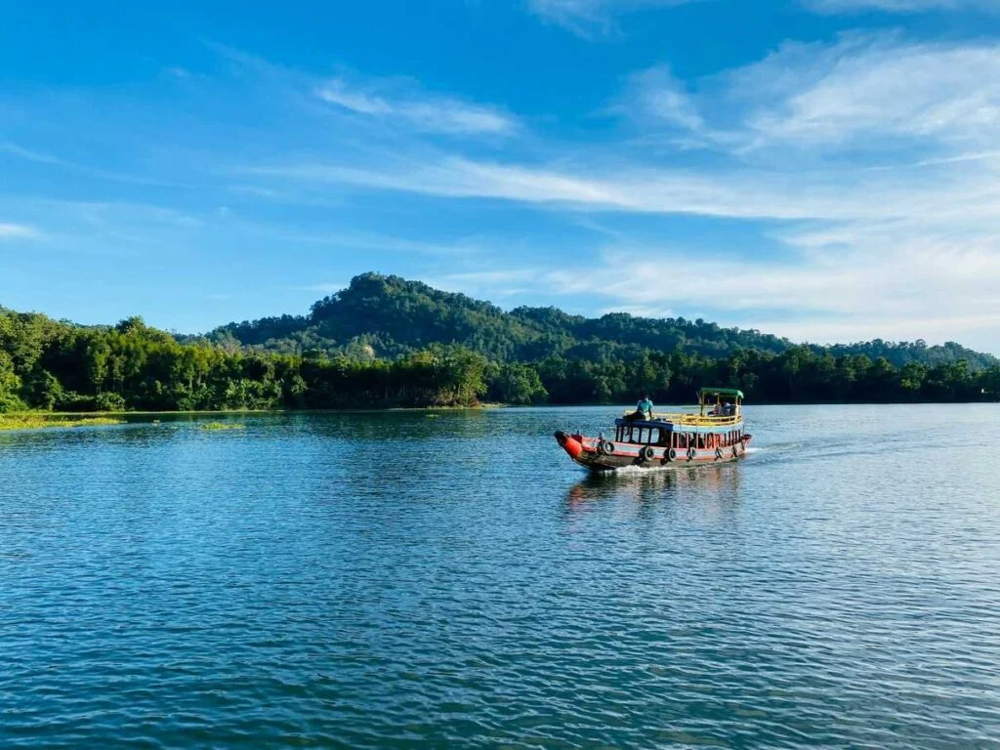
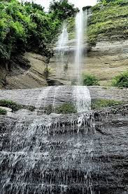
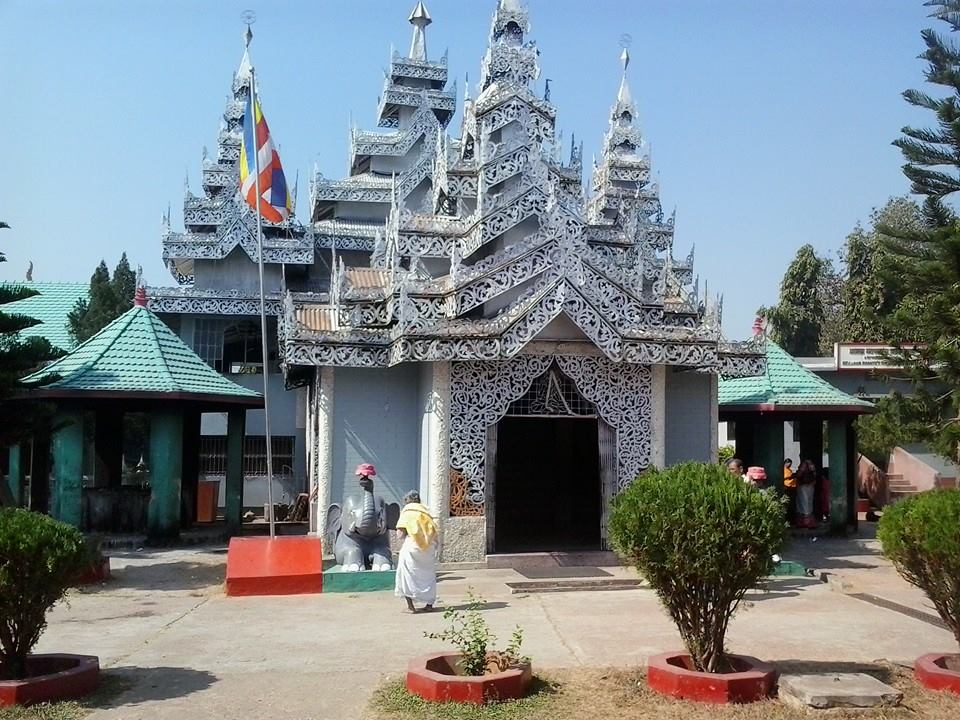
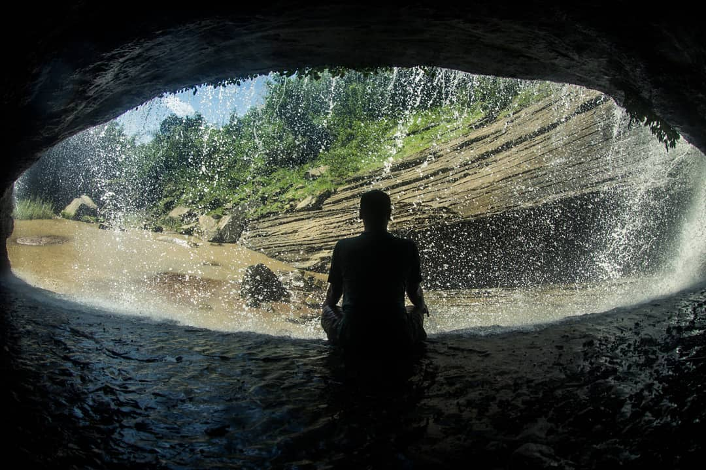
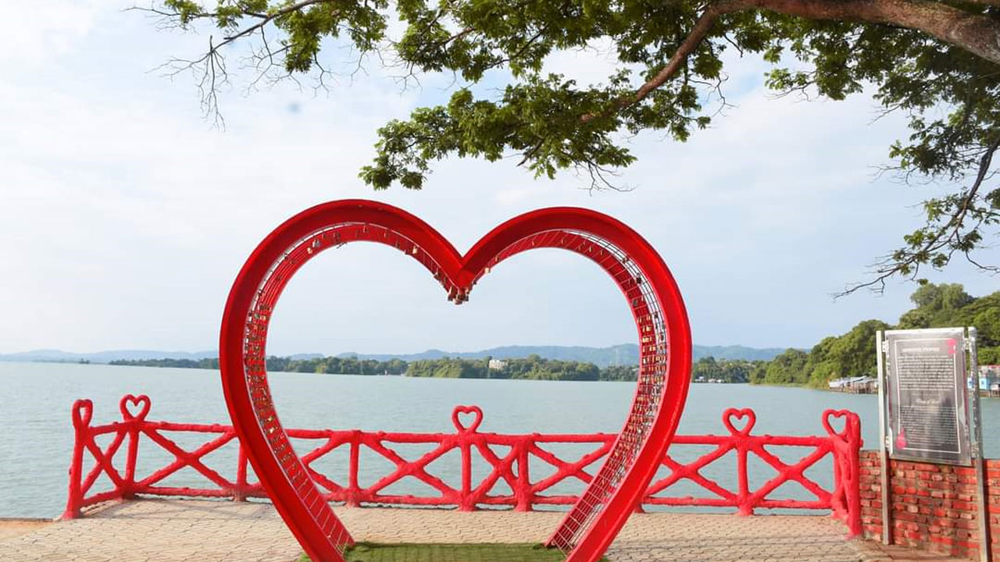

Top Tourist Attractions
Kaptai Lake

The largest man-made lake in Bangladesh, offering stunning boat rides and breathtaking views.
Shuvolong Waterfall

A beautiful waterfall accessible only by boat, located deep within the Rangamati hills.
Hanging Bridge

A famous suspension bridge offering scenic views of the lake and surrounding hills.
Rajbon Bihar

A sacred Buddhist monastery known for its peaceful ambiance and unique architecture.
Dhuppani Waterfall

Dhuppani Waterfall is a breathtaking, less-explored cascade in Bandarban, Bangladesh, surrounded by dense forests and accessible through a challenging yet scenic trekking route. .
Polwel park

Polwel Park in Chittagong is a scenic getaway with a lake, lush greenery, and family-friendly attractions.